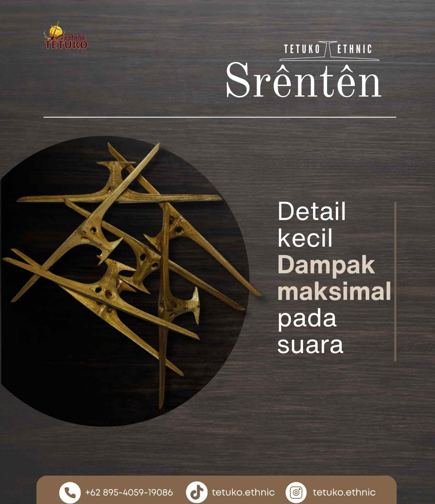

Rebab diketahui sebagai ricikan pokok dalam karawitan Jawa yang berfungsi sebagai pamurbå lagu. Istilah pamurbå lagu dipahami sebagai pengatur dan penentu dalam hal mengolah lagu. Tetuko Ethnic tidak hanya menekankan penjualan, tetapi juga edukasi mengenai kualitas rebab, meliputi kualitas suara, bahan, proses pembuatan, serta perawatan.



Tetuko Ethnic
Gang Petir II No.51 Ngasinan RT02 RW13 Kel. Jebres, Kec. Jebres Kota Surakarta
HP : 0858-0375-3841
Email : tetukoethnic@gmail.com
WhatsApp